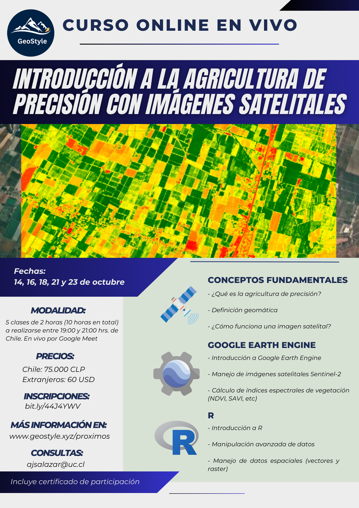
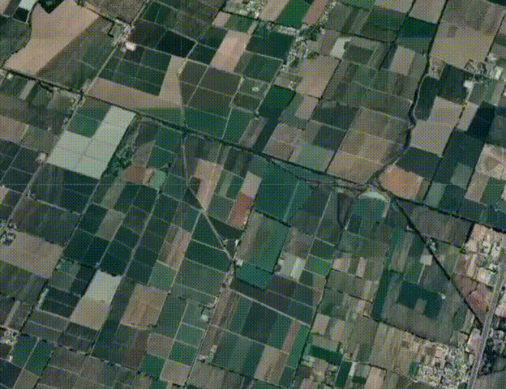

Próximo evento
Curso online en vivo:
Introducción a la Agricultura de Precisión con
Imágenes Satelitales
En esta página encontrarás la información detallada del curso, así como la respuesta a las preguntas más frecuentes.

1) ¿En qué fecha es el curso en vivo?
Los días 14, 16, 18, 21 y 23 de octubre (de 19:00 a 21:00 hrs. Chile)
2) ¿Las clases se grabarán?
Sí, serán grabadas y compartidas a los asistentes en un carpeta de
Google Drive.
Si quieres participar pero tienes problemas con la fecha
u horario, puedes inscribirte igual
y ver los videos de las clases
grabadas junto con el material.
3) ¿El curso entrega certificado?
Sí, el curso entrega certificado. No es necesario hacer un trabajo de aprobación para recibir el certificado.
4) ¿Qué aprenderé?
| Clase | Fecha | Tema | Contenidos |
|---|---|---|---|
| 1 | 14/10 | Introducción a la agricultura de precisión con imágenes satelitales |
|
| 2 | 16/10 | Manejo de Google Earth Engine |
|
| 3 | 18/10 | Índices espectrales de vegetación |
|
| 4 | 21/10 | Introducción a R |
|
| 5 | 23/10 | Manejos de archivos vectoriales y raster en R |
|
5) ¿Qué son los índices espectrales?
Los índices espectrales son herramientas de la teledetección que
utilizan la luz reflejada por los cultivos para
ofrecer datos valiosos
sobre su estado. Un ejemplo prominente es el Índice de Vegetación de
Diferencia Normalizada (NDVI).
Este índice mide la salud y densidad de
la vegetación, permitiendo la detección temprana de áreas de estrés en
tus cultivos.
Este curso está diseñado para enseñarte a calcular y
aplicar estos índices en la gestión de tus campos.
Dominar estas
habilidades puede mejorar tus rendimientos, incrementar la
sostenibilidad de
tu operación y mantener tu agricultura al día con la
tecnología más reciente.
6) ¿Qué es Google Earth Engine y qué ventajas me entrega?
Google Earth Engine es mucho más que Google Earth. Es una innovadora
plataforma de análisis de datos geoespaciales basada en la nube. A
diferencia de Google Earth, que te permite visualizar el mundo, Google
Earth Engine
te permite analizarlo. Utiliza el lenguaje de
programación JavaScript para permitirte analizar
de manera eficiente
enormes cantidades de datos de imágenes satelitales y geoespaciales.
Esta plataforma es especialmente útil para aquellos que trabajan en
agricultura de precisión.
Al inscribirte en este curso, aprenderás a
usar Google Earth Engine para obtener información valiosa
sobre la
salud de los cultivos y para
identificar patrones y tendencias a lo largo del tiempo.
A diferencia
de los softwares de SIG tradicionales como QGIS y ArcGIS, Google Earth
Engine
te permite procesar grandes conjuntos de datos y acceder a un
vasto archivo de imágenes
satelitales de forma gratuita. No
necesitarás un computador potente ni preocuparte por
el
almacenamiento de datos. Todo se hace en la nube.
7) ¿Qué es R y que ventajas me entrega?
R es un lenguaje de programación estadística de código abierto que es
extremadamente
versátil y poderoso. Con R, puedes realizar análisis de
datos, visualización de datos, y modelado
estadístico avanzado que no
podrías hacer con un software SIG tradicional. A diferencia de los programas SIG
tradicionales como QGIS y
ArcGIS, R te permite tener un control completo sobre tus análisis y
tus datos.
Puedes automatizar procesos, repetir análisis fácilmente, y
adaptar los análisis a tus necesidades específicas.
Además, la
comunidad de usuarios de R es muy activa y hay una gran cantidad de
paquetes disponibles
para casi cualquier tipo de análisis que puedas
imaginar. Todo esto hace de R una herramienta
increíblemente poderosa
para cualquier profesional en agricultura de precisión.
8) ¿Qué obtengo al inscribirme?
Además, del curso en vivo obtienes dos cursos asincrónicos (videos
grabados) de regalo:
1) Acceso gratis al curso "Google Earth Engine y Machine Learning",
el
cuál es un curso asincrónico (son videos grabados en la plataforma
Udemy).
En este curso vas a poder practicar lo aprendido (más
información click
acá)
2) Acceso gratis al curso "Introducción a SIG y Teledetección en R",
el cuál es un curso asincrónico (son videos grabados en la
plataforma Udemy).
En este curso vas a poder practicar lo aprendido
(más información click
acá)
9) ¿Puedes contar un poco más sobre los cursos asincrónicos de regalo?
Estos cursos tienen una metodología flexible, ya que estos son videos
grabados
que se encuentran en la plataforma Udemy y podrás avanzar
cuando más te acomode.
Además, en estos cursos podrás reforzar y
practicar lo aprendido en el curso realizado en vivo.
Puntos importantes:
- Una vez que te inscribes al curso, tienes acceso de por vida al
contenido,
por lo que puedes avanzar en el curso a tu propio ritmo.
- Los cursos tienen tareas para practicar lo aprendido.
Las tareas no
son obligatorias, pero se recomienda que las realices, ya que
para
dominar lo aprendido en los cursos tienes que practicar y practicar.
Recuerda que la práctica hace al maestro.
- Una vez finalizado el curso, recibes un certificado de aprobación
del curso.
10) No soy de Chile, ¿puedo participar igual?
Sí, este curso está abierto a personas de todos los países del mundo.
11) ¿Cómo sé si el curso es bueno?
Acá puedes ver las opiniones de personas que se han inscrito a los demás cursos
12) ¿Qué conocimientos previos necesito?
Sólo necesitas tener conocimientos básicos sobre agricultura.
No es
necesario tener conocimientos previos de teledetección,
sistemas de
información geográfica (SIG), programación o
estadística, ya que estos
se enseñarán a lo largo del curso.
13) ¿A través de qué plataforma se dictará el curso?
Google Meet
14) ¿Quién dictará el curso?
Andrés Salazar, Ingeniero Agrónomo y Magíster en Recursos Naturales de
la Pontificia Universidad Católica de Chile.
Además, posee un diplomado
en Gestión Integrada de Recursos Hídricos de la Universidad de Chile
Andrés cuenta con una experiencia de más de 3 años realizando
capacitaciones de
R y Google Earth Engine. Combinando los formatos
online sincrónicos y asincrónicos,
ha enseñado a más de 1000 personas
a utilizar R y Google Earth Engine.
Pefil Linkedin
Perfil ResearchGate
15) ¿Cuál es el valor del curso?
Personas de Chile: 75.000 CLP
Extranjeros: 60 USD
16) ¿Cómo se realiza el pago?
Personas de Chile: mediante transferencia bancaria
Extranjeros: mediante PayPal
*Los datos para realizar el pago están en el formulario de inscripción
(al final de esta página)
17) Soy extranjero y nunca he usado PayPal
No te preocupes, es un sistema súper seguro.
Hemos recibido
transferencias de dinero de muchos países y nunca hemos tenido
problemas con PayPal.
Sólo necesitas una tarjeta de crédito para
vincularla con tu cuenta de PayPal.
Si quieres más información de como funciona PayPal, haz click
acá
18) ¿Dónde me inscribo?
Entrando al siguiente link
